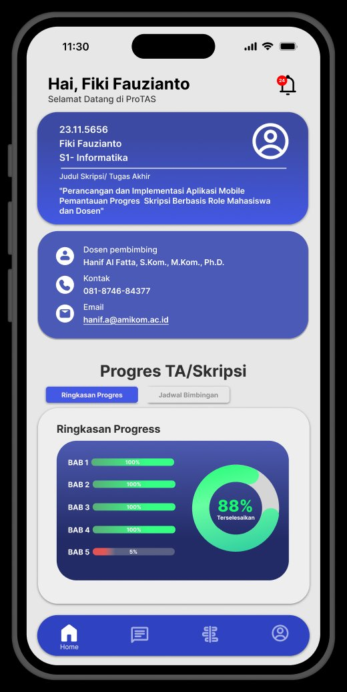
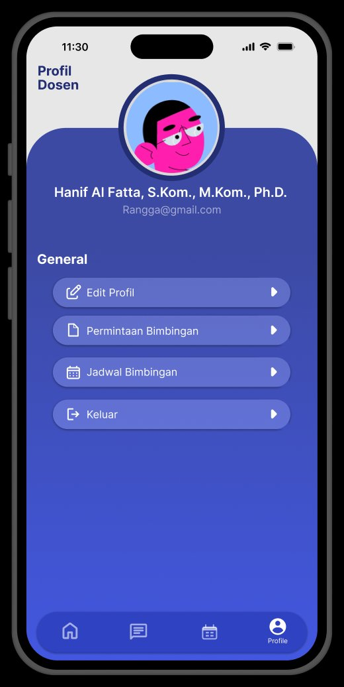
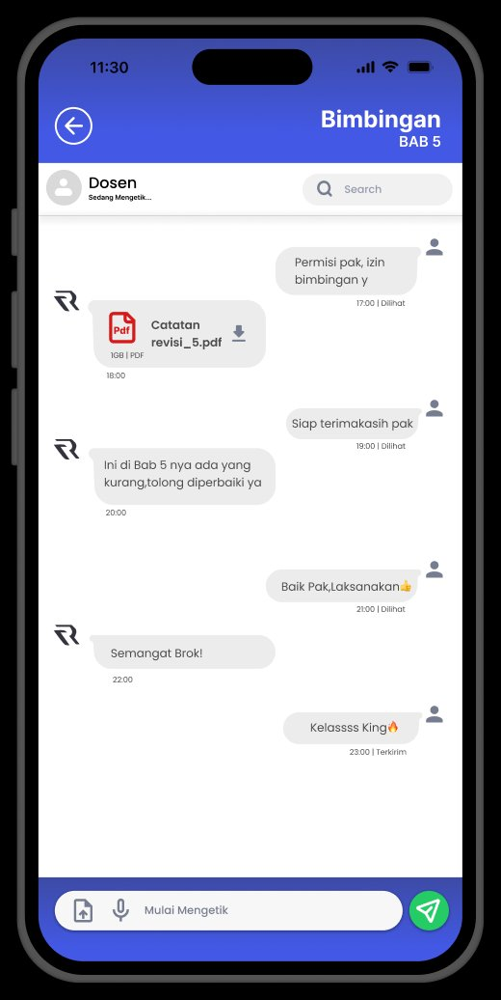
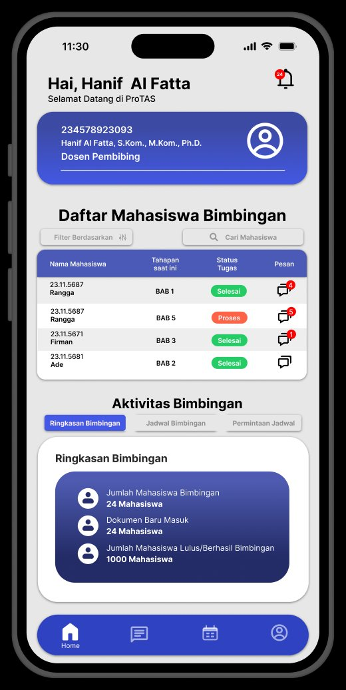
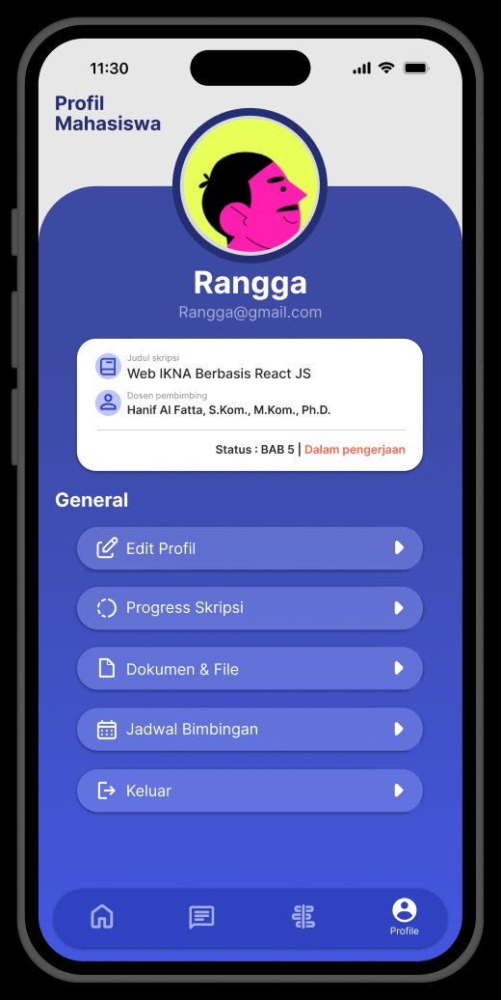

Platform terintegrasi untuk memantau progres skripsi, mengelola jadwal bimbingan, dan berkomunikasi langsung dengan dosen pembimbing — semua dalam satu ekosistem digital yang cerdas.





Kebanyakan mahasiswa memantau skripsi lewat kombinasi grup WhatsApp, spreadsheet manual, dan pertemuan dadakan. ProTAS menggantikan cara kerja yang tercecer itu dengan satu platform yang saling terhubung dari bimbingan pertama sampai sidang.
WhatsApp + Excel + Tebak Jadwal
Satu platform, semua saling terhubung
Dari pemantauan progres hingga manajemen dokumen — ProTAS menyediakan ekosistem lengkap untuk penyelesaian tugas akhir yang efisien.
Visualisasi progres per-BAB yang jelas. Lihat persentase penyelesaian, timeline, dan milestone skripsimu dalam satu tampilan informatif.
Komunikasi real-time dengan dosen pembimbing. Kirim dokumen, terima feedback, dan bahas revisi tanpa harus bertemu langsung.
Atur jadwal bimbingan dengan mudah. Sistem notifikasi otomatis memastikan kamu tidak pernah melewatkan sesi bimbingan penting.
Simpan semua versi dokumen skripsi dalam satu tempat. Riwayat revisi tersimpan rapi dan dapat diakses kapan saja dari mana saja.
Terima pemberitahuan instan saat dosen memberikan catatan baru, jadwal dikonfirmasi, atau ada update penting dari pembimbing.
Enkripsi end-to-end untuk semua data dan dokumen. Privasi skripsimu terlindungi dengan standar keamanan tingkat enterprise.
Setup ProTAS tidak memerlukan keahlian teknis. Daftarkan dirimu dan langsung mulai.
Daftar sebagai Mahasiswa atau Dosen Pembimbing menggunakan email institusi. Verifikasi akun dalam 1 menit.
Mahasiswa mengirim permintaan bimbingan ke dosen. Setelah diterima, mulai pantau progres bersama.
Update progres per-BAB, atur jadwal bimbingan, upload dokumen, dan komunikasi langsung dari satu platform.
Daftar Mahasiswa Bimbingan
ProTAS dirancang untuk memenuhi kebutuhan mahasiswa maupun dosen pembimbing dalam proses bimbingan skripsi.
Kelola perjalanan skripsimu dari awal hingga selesai dengan tampilan yang intuitif dan informatif.
Pantau seluruh mahasiswa bimbinganmu dari satu dashboard yang terstruktur dan efisien.
Grafik progres per-BAB yang mudah dipahami. Ketahui di mana kamu berada dan berapa jauh lagi jarak ke garis finish.
Ribuan mahasiswa dan dosen sudah merasakan manfaat ProTAS dalam mempercepat penyelesaian tugas akhir.
"ProTAS benar-benar mengubah cara saya mengelola bimbingan. Progres BAB mahasiswa saya sekarang terpantau dengan jelas. Tidak ada lagi meeting yang tidak produktif!"
"Dulu saya sering lupa jadwal bimbingan dan revisi dokumen berantakan. Sekarang dengan ProTAS, semua terorganisir. Progress BAB 1-4 saya selesai lebih cepat dari target!"
"Fitur chat bimbingan ProTAS membuat komunikasi dengan dosen jauh lebih efisien. Tidak ada lagi revisi yang hilang. Semua terdokumentasi dengan baik!"
Jawaban untuk pertanyaan yang sering ditanyakan seputar ProTAS.
Ya! ProTAS tersedia gratis untuk mahasiswa dan dosen dengan fitur-fitur dasar yang sudah mencakup pemantauan progres, chat bimbingan, dan manajemen jadwal. Tersedia juga paket Premium untuk institusi.
Keamanan data adalah prioritas utama kami. Semua data dienkripsi menggunakan standar SSL/TLS. Dokumen skripsi hanya dapat diakses oleh mahasiswa yang bersangkutan dan dosen pembimbingnya.
Dosen dapat mendaftar langsung melalui aplikasi menggunakan email institusi. Setelah verifikasi, dosen dapat langsung menerima permintaan bimbingan dari mahasiswa.
ProTAS tersedia sebagai aplikasi mobile di Google Play Store (Android) dan App Store (iOS), serta dapat diakses melalui browser web di desktop maupun laptop.
Tentu bisa! ProTAS mendukung skripsi dengan lebih dari satu dosen pembimbing. Semua pembimbing dapat melihat progres dan memberikan feedback melalui platform yang sama.
Kami yakin ProTAS akan membantu skripsimu selesai lebih terstruktur — jadi kami menghilangkan semua alasan untuk ragu mencoba.
Enkripsi SSL/TLS untuk seluruh dokumen dan percakapan bimbingan. Privasi skripsimu terjamin sepenuhnya.
Tidak puas dengan paket Premium/Institusi? Ajukan pengembalian dana penuh dalam 30 hari pertama.
Fitur dasar selamanya gratis untuk mahasiswa dan dosen. Tidak perlu kartu kredit untuk mulai memantau progres.
Tim kami siap membantu lewat live chat setiap hari kerja jika kamu mengalami kendala teknis apa pun.
Bergabung dengan lebih dari 2.400 mahasiswa yang sudah merasakan kemudahan ProTAS. Mulai gratis sekarang.
✓ Gratis selamanya · ✓ Setup dalam 2 menit · ✓ Tanpa iklan
Tinggalkan data kamu dan tim ProTAS akan menghubungi untuk demo, kerja sama institusi, atau bantuan teknis lainnya.